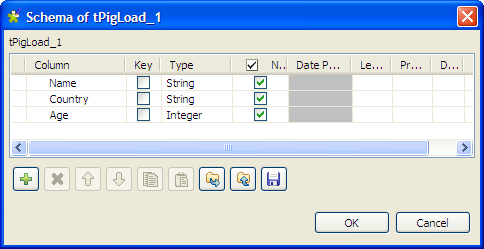
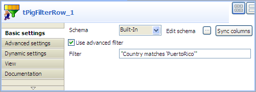

Warning
This component will be available in the Palette of the studio on the condition that you have subscribed to the relevant edition of Talend Big Data Studio.
|
Component family |
Big Data / Hadoop | |
|
Function |
The tPigFilterRow component filters the input flow in a Pig chain based on conditions set on given column(s). | |
|
Purpose |
This component is used to filter the input flow in a Pig chain based on conditions set on one or more columns. | |
|
Basic settings |
Schema and Edit Schema |
A schema is a row description, i.e., it defines the number of fields that will be processed and passed on to the next component. The schema is either Built-in or stored remotely in the Repository. If you are using Talend Open Studio for Big Data, only the Built-in mode is available. |
|
|
|
Built-in: The schema will be created and stored locally for this component only. Related topic: see Talend Data Integration Studio User Guide. |
|
|
|
Repository: The schema already exists and is stored in the Repository, hence can be reused in various projects and Job designs. Related topic: see Talend Data Integration Studio User Guide. |
|
|
Filter configuration |
Click the Add button beneath the Filter configuration table to set one or more filter conditions. NoteThis table disappears if you select Use advanced filter. |
|
|
Use advanced filter |
Select this check box to define advanced filter condition by entering customized filter expression in the Filter field. |
|
Advanced settings |
tStatCatcher Statistics |
Select this check box to gather the Job processing metadata at the Job level as well as at each component level. |
|
Usage |
This component is commonly used as an intermediate step in a Pig chain. | |
|
Prerequisites |
The Hadoop distribution must be properly installed, so as to guarantee the interaction with the Studio. For example, if you need to connect to MapR from the Studio, ensure that you have installed
the MapR client in the machine where the Studio is, and added the MapR client library to the
PATH variable of that machine. For Windows, this library is lib\MapRClient.dll in the MapR client jar file; without adding it, you may
encounter the following error: For further information about how to install an Hadoop distribution, see the manuals corresponding to the Hadoop distribution you are using. | |
|
Limitation |
Knowledge of Pig scripts is required. | |
This scenario describes a four-component Job that filters a list of customers to find out customers from a particular country, and saves the result list to a local file. Before the input data is filtered, duplicate entries are first removed from the list.
The input file contains three columns: Name, Country, and Age, and it has some duplicate entries, as shown below:
Mario;PuertoRico;49 Mike;USA;22 Ricky;PuertoRico;37 Silvia;Spain;20 Billy;Canada;21 Ricky;PuertoRico;37 Romeo;UK;19 Natasha;Russia;25 Juan;Cuba;23 Bob;Jamaica;55 Mario;PuertoRico;49
Drop the following components from the Palette to the design workspace: tPigLoad, tPigDistinct, tPigFilterRow, and tPigStoreResult.
Right-click tPigLoad, select Row > Pig Combine from the contextual menu, and click tPigDistinct to link these two components.
Repeat this operation to link tPigDistinct to tPigFilterRow, and tPigFilterRow to tPigStoreResult using Row > Pig Combine connections to form a Pig chain.

Procedure 1.13. Loading the input data and removing duplicates
Double-click tPigLoad to open its Basic settings view.

Click the [...] button next to Edit schema to open the [Schema] dialog box.
Click the [+] button to add three columns according to the data structure of the input file: Name (string), Country (string) and Age (integer), and then click OK to save the setting and close the dialog box.
Click Local in the Mode area.
Fill in the Input file URI field with the full path to the input file.
Select PigStorage from the Load function list, and leave rest of the settings as they are.
Double-click tPigDistinct to open its Basic settings view, and click Sync columns to make sure that the input schema structure is correctly propagated from the preceding component.
This component will remove any duplicates from the data flow.
Procedure 1.14. Configuring the filter
Double-click tPigFilterRow to open its Basic settings view.
Click Sync columns to make sure that the input schema structure is correctly propagated from the preceding component.
Select Use advanced filter and fill in the Filter field with filter expression:
"Country matches 'PuertoRico'"
This filter expression selects rows of data that contains "PuertoRico" in the Country column.
Procedure 1.15. Configuring the file output
Double-click tPigStoreResult to open its Basic settings view.

Click Sync columns to make sure that the input schema structure is correctly propagated from the preceding component.
Fill in the Result file field with the full path to the result file.
If the target file already exists, select the Remove result directory if exists check box.
Select PigStorage from the Store function list, and leave rest of the settings as they are.